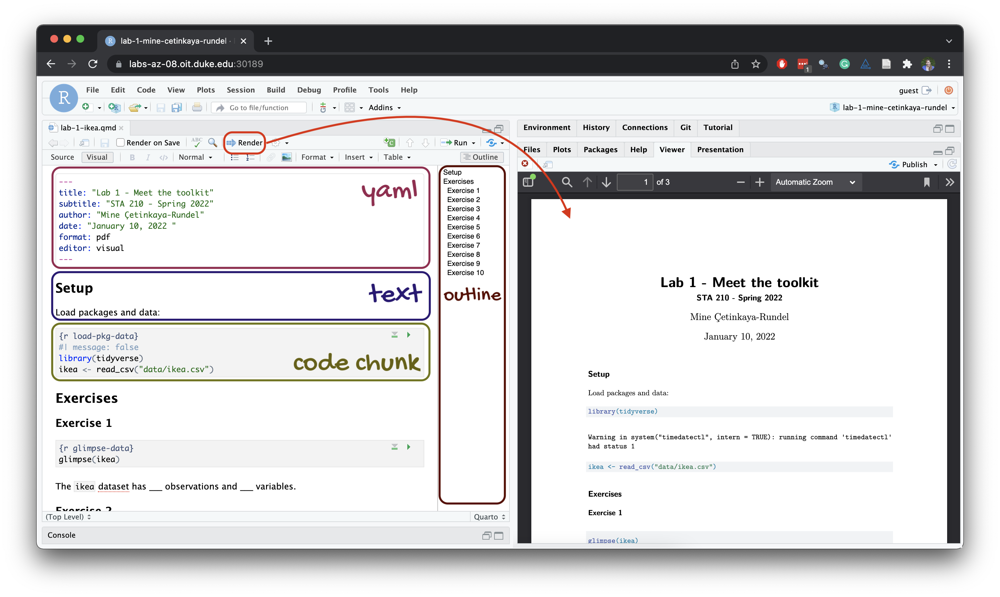

library(tidyverse)Lab 1
From the Midwest to North Carolina
Lab
Due Mon, Sep 16 at 8:30 am
Introduction
This lab will introduce you to the course computing workflow. The main goal is to reinforce our demo of R and RStudio, which we will be using throughout the course both to learn the statistical concepts discussed in the course and to analyze real data and come to informed conclusions.
Note
R is the name of the programming language itself and RStudio is a convenient interface, commonly referred to as an integrated development environment or an IDE, for short.
An additional goal is to reinforce Git and GitHub, the version control, web hosting, and collaboration systems that we will be using throughout the course.
Note
Git is a version control system (like “Track Changes” features from Microsoft Word but more powerful) and GitHub is the home for your Git-based projects on the internet (like DropBox but much better).
As the labs progress, you are encouraged to explore beyond what the labs dictate; a willingness to experiment will make you a much better programmer. Before we get to that stage, however, you need to build some basic fluency in R. Today we begin with the fundamental building blocks of R and RStudio: the interface, reading in data, and basic commands.
Warning
This lab assumes that you have already completed Lab 0. If you have not, please
- go back and do that first before proceeding and
- let your TA know as they will need to set up a Lab 1 repository for you before you can complete this lab.
Learning objectives
By the end of the lab, you will…
- Be familiar with the workflow using R, RStudio, Git, and GitHub
- Gain practice writing a reproducible report using Quarto
- Practice version control using Git and GitHub
- Be able to create data visualizations using
ggplot2
Getting started
Step 1: Log in to RStudio
- Go to https://cmgr.oit.duke.edu/containers and login with your Duke NetID and Password.
- Click
STA198-199under My reservations to log into your container. You should now see the RStudio environment.
Refresher: R and R Studio
Below are the components of the RStudio IDE.

Below are the components of a Quarto (.qmd) file.

Step 2: Clone the repo & start new RStudio project
Go to the course organization at github.com/sta199-f24 organization on GitHub. Click on the repo with the prefix lab-1. It contains the starter documents you need to complete the lab.
Click on the green CODE button, select Use SSH (this might already be selected by default, and if it is, you’ll see the text Clone with SSH). Click on the clipboard icon to copy the repo URL.
In RStudio, go to File ➛ New Project ➛Version Control ➛ Git.
Copy and paste the URL of your assignment repo into the dialog box Repository URL. Again, please make sure to have SSH highlighted under Clone when you copy the address.
Click Create Project, and the files from your GitHub repo will be displayed in the Files pane in RStudio.
Click lab-1.qmd to open the template Quarto file. This is where you will write up your code and narrative for the lab.
Step 3: Update the YAML
The top portion of your Quarto file (between the three dashed lines) is called YAML. It stands for “YAML Ain’t Markup Language”. It is a human-friendly data representation for all programming languages. All you need to know is that this area is called the YAML (we will refer to it as such) and that it contains meta information about your document.
Open the Quarto (
.qmd) file in your project, change the author name to your name, and render the document.If you get a popup window error, click “Try again”.
Examine the rendered document and make sure your name is updated in the document.
Step 4: Commit your changes
Go to the Git pane in RStudio. This will be in the top right hand corner in a separate tab.
If you have made changes to your Quarto (.qmd) file, you should see it listed here. If you have rendered the document, you should also see its output, a PDF file, listed there.
Click on it to select it in this list and then click on Diff.
This shows you the difference between the last committed state of the document and its current state including changes. You should see deletions in red and additions in green.
If you’re happy with these changes, prepare the changes to be pushed to your remote repository.
First, stage your changes by checking the appropriate box on the files you want to prepare.
Next, write a meaningful commit message (for instance, “Updated author name”) in the Commit message box.
Finally, click Commit. Note that every commit needs to have a commit message associated with it.
Note
You don’t have to commit after every change, as this would get quite tedious. You should commit states that are meaningful to you for inspection, comparison, or restoration (e.g., restoring a previous version of your document).
In the first few assignments, we will tell you exactly when to commit and, in some cases, what commit message to use. As the semester progresses, we will let you make these decisions.
Step 5: Pushing changes
Now that you have made an update and committed this change, it’s time to push these changes to your repo on GitHub.
In the Git pane, click on Push.
Then, make sure all the changes went to GitHub. Go to your GitHub repo in your browser and refresh the page. You should see your commit message next to the updated files. If you see this, all your changes are on GitHub, and you’re good to go!
Warning
If you don’t see your update, go back to Step 4. Remember that in order to push your changes to GitHub, you must have staged (checked boxes) your commit (with a commit message) to be pushed and then click on Push.
Packages
In this lab we will work with the tidyverse package, which is a collection of packages for doing data analysis in a “tidy” way.
- Run the code cell by clicking on the green triangle (play) button for the code cell labeled
load-packages. This loads the package to make its features (the functions and datasets in it) be accessible from your Console. - Then, render the document which loads this package to make its features (the functions and datasets in it) be available for other code cells in your Quarto document.
Refresher: tidyverse
The tidyverse is a meta-package. When you load it you get nine packages loaded for you:
- dplyr: for data wrangling
- forcats: for dealing with factors
- ggplot2: for data visualization
- lubridate: for dealing with dates
- purrr: for iteration with functional programming
- readr: for reading and writing data
- stringr: for string manipulation
- tibble: for modern, tidy data frames
- tidyr: for data tidying and rectangling
Guidelines
As we’ve discussed in lecture, your plots should include an informative title, axes and legends should have human-readable labels, and careful consideration should be given to aesthetic choices.
Additionally, code should follow the tidyverse style. Particularly,
there should be spaces before and line breaks after each
+when building aggplot,there should also be spaces before and line breaks after each
|>in a data transformation pipeline,code should be properly indented,
there should be spaces around
=signs and spaces after commas.
Furthermore, all code should be visible in the PDF output, i.e., should not run off the page on the PDF. Long lines that run off the page should be split across multiple lines with line breaks.1
Remember that continuing to develop a sound workflow for reproducible data analysis is important as you complete the lab and other assignments in this course. There will be periodic reminders in this assignment to remind you to render, commit, and push your changes to GitHub.
Important
You should have at least 3 commits with meaningful commit messages by the end of the assignment.
Questions
Part 1
Let’s take a trip to the Midwest!
We will use the midwest data frame for this lab. It is part of the ggplot2 R package, so the midwest data set is automatically loaded when you load the tidyverse package.
The data contains demographic characteristics of counties in the Midwest region of the United States.
Because the data set is part of the ggplot2 package, you can read documentation for the data set, including variable definitions by typing ?midwest in the Console or searching for midwest in the Help pane.
Question 1
Visualize the distribution of population density of counties using a histogram with geom_histogram() with four separate binwidths: a binwidth of 100, a binwidth of 1,000, a binwidth of 10,000, and a binwidth of 100,000. For example, you can create the first plot with:
ggplot(midwest, aes(x = popdensity)) +
geom_histogram(binwidth = 100) +
labs(
x = "Population density",
y = "Count",
title = "Population density of Midwestern counties",
subtitle = "Binwidth = 100"
)You will need to make four different histograms. Make sure to set informative titles and axis labels for each of your plots. Then, comment on which binwidth is most appropriate for these data and why.
Render, commit, and push your changes to GitHub with the commit message “Added answer for Question 1”.
Make sure to commit and push all changed files so that your Git pane is empty afterward.
Question 2
Visualize the distribution of population density of counties again, this time using a boxplot with geom_boxplot(). Make sure to set informative titles and axis labels for your plot. Then, using information as needed from the box plot as well as the histogram from Question 1, describe the distribution of population density of counties and comment on any potential outliers, making sure to identify at least one county that is a clear outlier by name in your narrative and commenting on whether it makes sense to you that this county is an outlier. You can use the data viewer to identify the outliers interactively, you do not have to write code to identify them.
Important
In describing a distribution, make sure to mention shape, center, spread, and any unusual observations.
Render, commit, and push your changes to GitHub with the commit message “Added answer for Question 2”.
Make sure to commit and push all changed files so that your Git pane is empty afterward.
Question 3
Create a scatterplot of the percentage below poverty (percbelowpoverty on the y-axis) versus percentage of people with a college degree (percollege on the x-axis), where the color and shape of points are determined by state. Make sure to set informative titles, axis, and legend labels for your plot. First, describe the overall relationship between percentage of people with a college degree and percentage below poverty in Midwestern states, making sure to identify at least one county that is a clear outlier by name in your narrative. You can use the data viewer to identify the outliers interactively, you do not have to write code to identify them. Then, comment on whether you can identify how this relationship varies across states.
Render, commit, and push your changes to GitHub with the commit message “Added answer for Question 3”.
Make sure to commit and push all changed files so that your Git pane is empty afterward.
Question 4
Now, let’s examine the relationship between the same two variables, once again using different colors and shapes to represent each state, and using a separate plot for each state, i.e., with faceting with facet_wrap(). In addition to points (geom_point()), represent the data with a smooth curve fit to the data with geom_smooth(), with the argument se = FALSE. Make sure to set informative titles, axis, and legend labels for your plot. Which plot do you prefer - this plot or the plot in Question 3? Briefly explain your choice.
Note
se = FALSE removes the confidence bands around the line. These bands show the uncertainty around the smooth curve. We’ll discuss uncertainty around estimates later in the course and bring these bands back then.
Render, commit, and push your changes to GitHub with the commit message “Added answer for Question 4”.
Make sure to commit and push all changed files so that your Git pane is empty afterward.
Question 5
Do some states have counties that tend to be geographically larger than others?
To explore this question, create side-by-side boxplots of area (area) of a county based on state (state). How do typical county area sizes compare across states? How do variabilities of county sizes compare across states? Which state has the single largest county? Identify the name of this county. You can use the data viewer to identify it interactively, you do not have to write code.
Now is another good time to render, commit, and push your changes to GitHub with a meaningful commit message.
Once again, make sure to commit and push all changed files so that your Git pane is empty afterwards.
Question 6
Do some states have a higher percentage of their counties located in a metropolitan area?
Create a segmented bar chart with one bar per state and the bar filled with colors according to the value of metro – one color indicating Yes and the other color indicating No for whether a county is considered to be a metro area. The y-axis of the segmented barplot should range from 0 to 1, indicating proportions. Compare the percentage of counties in metro areas across the states based on this plot. Make sure to supplement your narrative with rough estimates of these percentages.
Hint
For this question, you should begin with the data wrangling pipeline below. We will learn more about data wrangling in the coming weeks, so this is a mini-preview. This pipeline creates a new variable called metro based on the value of the existing variable called inmetro. If the value of inmetro is equal to 1 (inmetro == 1), it sets the value of metro to "Yes", and if not, it sets the value of metro to "No". The resulting data frame is assigned back to midwest, overwriting the existing midwest data frame with a version that includes the new metro variable.
midwest <- midwest |>
mutate(metro = if_else(inmetro == 1, "Yes", "No"))Now is another good time to render, commit, and push your changes to GitHub with a meaningful commit message.
And once again, make sure to commit and push all changed files so that your Git pane is empty afterward. We keep repeating this because it’s important and because we see students forget to do this. So take a moment to make sure you’re following along with the version control instructions.
Question 7
Recreate the plot below, and then give it a title. Then, identify at least one county that is a clear outlier in Wisconsin (WI) by name. You can use the data viewer to identify them interactively, you do not have to write code. Comment on the population composition of this county by investigating the percentage of other races living there.

Hint
- The
ggplot2reference for themes will be helpful in determining the theme. - The
sizeof the points is 2. - The transparency (
alpha) of the points is 0.5. - You can put line breaks in labels with
\n.
Render, commit, and push your final changes to GitHub with a meaningful commit message.
Make sure to commit and push all changed files so that your Git pane is empty afterwards.
Part 2
Enough about the Midwest!
In this part we will use a new, more recent, and potentially more relevant dataset on counties in North Carolina.
This dataset is stored in a file called nc-county.csv in the data folder of your project/repository.
You can read this file into R with the following code:
nc_county <- read_csv("data/nc-county.csv")This will read the CSV (comma separated values) file from the data folder and store the dataset as a data frame called nc_county in R.
The variables in the dataset and their descriptions are as follows:
county: Name of county.state_abb: State abbreviation (NC).state_name: State name (North Carolina).land_area_m2: Land area of county in meters-squared, based on the 2020 census.land_area_mi2: Land area of county in miles-squared, based on the 2020 census.population: Population of county, based on the 2020 census.density: Population density calculated as population divided by land area in miles-squared.
In addition to being more recent and more relevant, this dataset is also more complete in the sense that we know the units of population density: people per mile-squared!
Question 8
First, guess what the relationship between population density and land area might be – positive? negative? no relationship?
Then, make a scatter plot of population density (density on the y-axis) vs. land area in miles-squared (land_area_mi2 on the x-axis). Make sure to set an informative title and axis labels for your plot. Describe the relationship. Was your guess correct?
Question 9
Now make a scatter plot of population density (density on the y-axis) vs. land area in meters-squared (land_area_m2 on the x-axis). Make sure to set an informative title and axis labels for your plot. Comment on how this scatterplot compares to the one in Exercise 8 — is the relationship displayed same or different. Explain why.
Question 10
Did you select your pages on Gradescope? You don’t need to write an answer for this question, if you select your pages when you upload your lab to Gradescope, you’ll get full points on this question. Otherwise, you’ll get a 0 on this question.2
Wrap-up
Submission
Once you are finished with the lab, you will submit your final PDF document to Gradescope.
Warning
Before you wrap up the assignment, make sure all of your documents are updated on your GitHub repo. We will be checking these to make sure you have been practicing how to commit and push changes.
You must turn in a PDF file to the Gradescope page by the submission deadline to be considered “on time”.
To submit your assignment:
- Go to http://www.gradescope.com and click Log in in the top right corner.
- Click School Credentials \(\rightarrow\) Duke NetID and log in using your NetID credentials.
- Click on your STA 199 course.
- Click on the assignment, and you’ll be prompted to submit it.
- Mark all the pages associated with question. All the pages of your lab should be associated with at least one question (i.e., should be “checked”).
Checklist
Make sure you have:
- attempted all questions
- rendered your Quarto document
- committed and pushed everything to your GitHub repository such that the Git pane in RStudio is empty
- uploaded your PDF to Gradescope
- selected pages associated with each question on Gradescope
Grading and feedback
Some of the questions will be graded for accuracy.
Some will be graded for completion.
Question 10 is just asking you to select your pages on Gradescope, and you get points for following the instructions!
There are also workflow points, for coding style, for committing at least three times as you work through your lab, and for overall organization.
You’ll receive feedback on your lab on Gradescope within a week.
Good luck, and have fun with it!